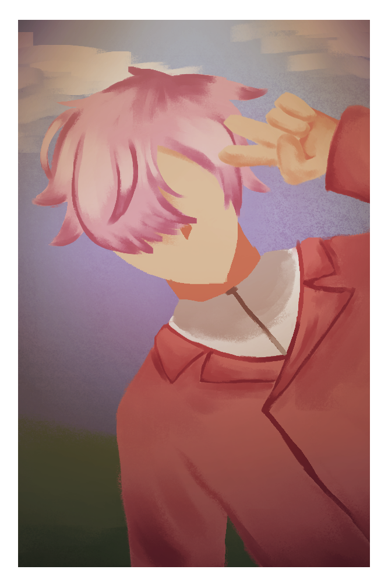
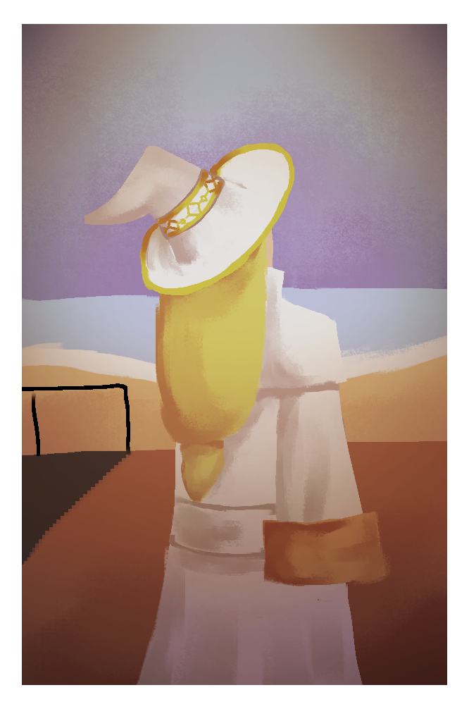
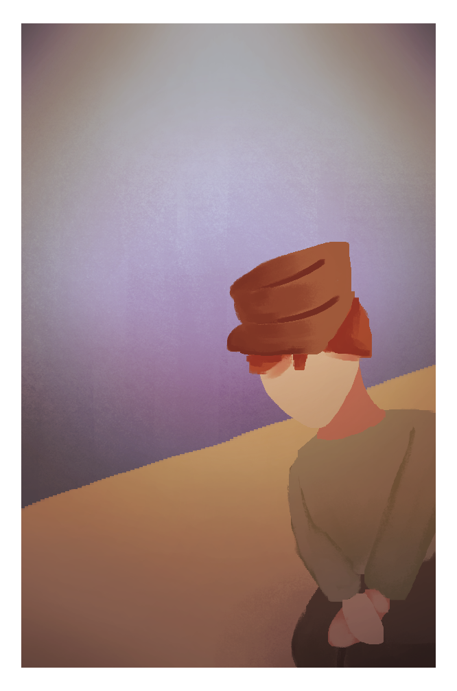
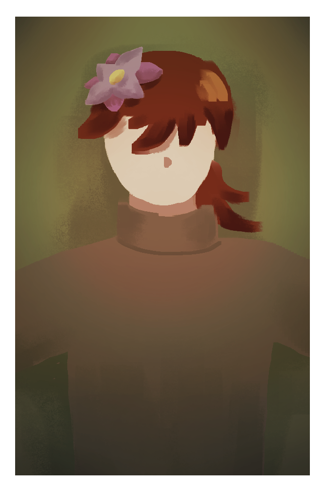
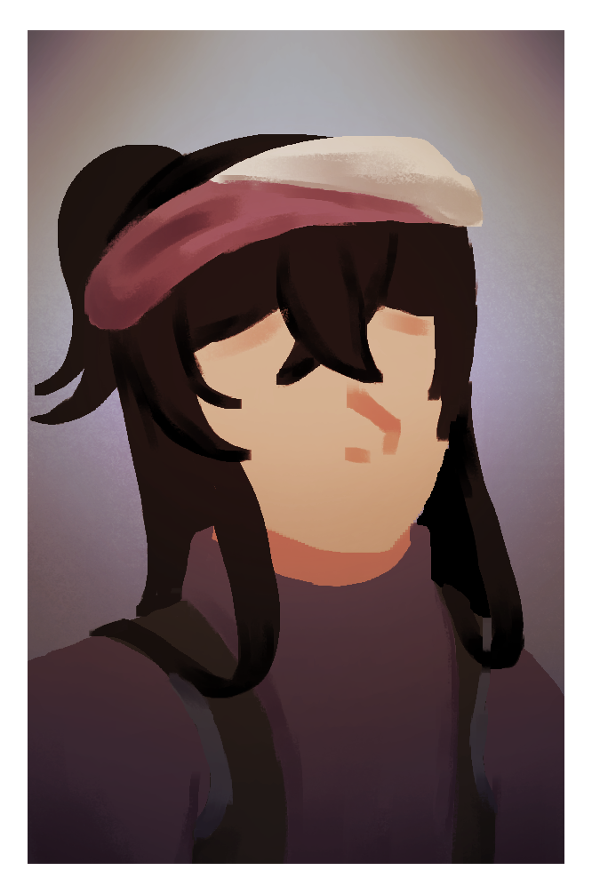
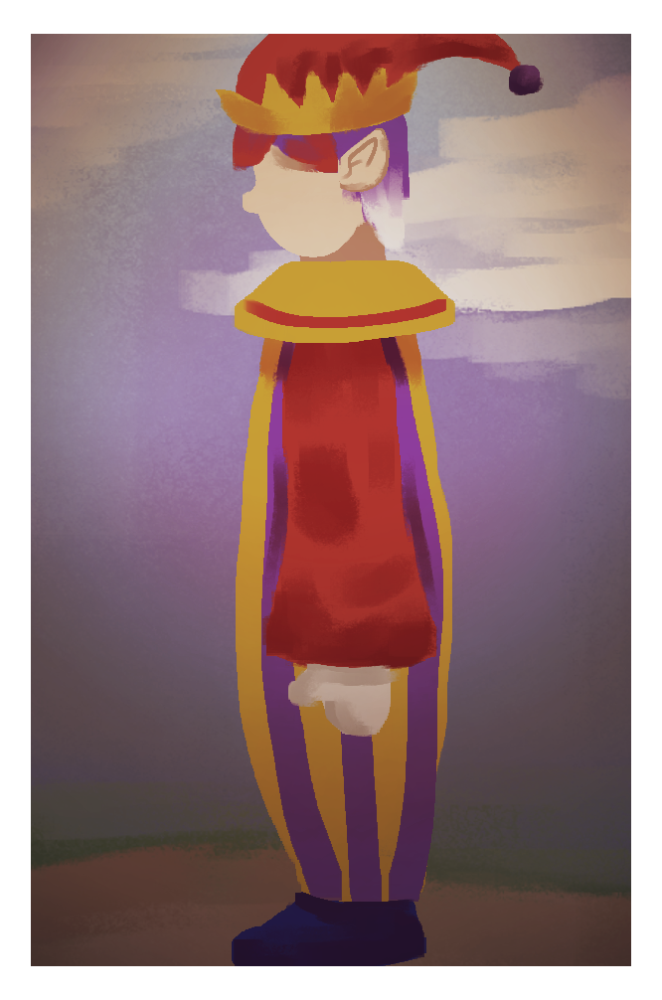

Matsuda Souta
Source: UTAU
Yada yada yada
- Admin K
Being the only developer on this website is a massive boon at times.
Title says it all. I haven't told either Souta or Kanro about them.
Other people
A bunch of people who I think are relevant to Rooster Island. Most haven't been confirmed, with one exception.






Tape
This is a tape. It's from Hugh Morris, one of the previous island's residents. Found it while taking a walk in the park. Never told anyone about it. It was too personal. Hugh gave me permission to write a transcript.
Lime-3.1 Transcript
Transcribed by AGD
Note: Due to the length of the cassettes, this had to be split in half.
Hugh: Today is April 30, 2026. No one else has disappeared today. It's been two days since the last person disappeared. Funny that the day I had to send my own child away for their safety, someone else disappears. I wouldn't be surprised if they were dead. We've already had three of them at this point, what's one more? Just...still can't believe that she'd do that, especiallly to her family. Poor Emmy got caught in the cross-fire.
Hugh: The murderer in question has disappeared about a week ago. Good for us, honestly. I don't want to imagine what would happen if she were still here. Probably more deaths. I don't want to imagine who'd be next.
Hugh: Right, status update. The flowers have engulfed the concert hall. The plaza is still accessible, though we can now only visit the fountain, the hat shop, and town hall. The flowers still far from us, but we all know that they're coming for us. We're delaying the inevitable by this rate. Sky's...still a bright orange. The sun feels like it's always in the same place, never moving. I sleep when I get too tired, so the time's always up for a gamble. The air feels fresher than ever. Ironic. Bright orange skies are associated with forest fires, I think. It's been a while since I've touched up on my nature knowledge. But a sky that should tell us that there's heavy smoke has the cleanest air that I'm breathing.
Hugh: What else...
Hugh: Oh! We just found out that the flowers aren't dangerous by themselves. We tried analyzing them further, maybe find some more magic out of them. We've failed though. Several times. We got some scrap metal as well! The two robots can still repair themselves. They've already fallen into immense disrepair, so it's not gonna last. But a few more moments mean the world to them. As for me...I've finally finished the second arc of my book series. Bay's always asking me what I'm reading, but I've never told her. I don't think she could finish the series in her lifetime. It's written by an elf, like me. Bay's mother is a human. I think that's all you need to know.
Hugh: Now, you may be wondering "why're you recording so casually, isn't the end of the world at your doorstep"? Well, I've stopped trying to record these cassettes so formally since, what, the orange tapes? Pretending to not be affected by this entire thing and recording so coldly hasn't done wonders to my mental health. So, I ditched that and started recording as myself. It helped me deal with the stress that I've dealt with! At least, for a little while.
Hugh: I still should be panicked. I still should be praying for survival. I still should be trying to find an escape! But...I'm not. I'm now calm about this predicament. Too calm. It sickens me. It makes me feel like I've regressed, putting up a shield to no longer get hurt. All this work for several months, nearly down the drain.
Hugh: I came here to be myself! Not to...not to keep putting up this mask.
Hugh: So I'm pretending to cope by speaking to no one in particular. Of course, you're listening, but I can't see you. Hell, I don't even know if someone is even listening to the first place. I'd be lucky if there even was a listener. But it's nice to vent my feelings every once in a while.
Lime-3.2 Transcript
Transcribed by AGD
Hugh: It's still April 30, 2026. Heh, could you believe that? It only feels like yesterday that one of my first friends has disappeared. One day, she was here, the next, poof! In reality...it's only been a week.
Hugh: It won't be long until I'm next. I've already called a close friend farewell, albeit temporarily. To give them hope that I'll see them again. I'm...not sure though. I only said that to comfort them. And I guess myself as well.
Hugh: I've always wondered what the flowers did. Anyone who's come into contact with them has vanished. Do they send us to another world? Do we really die? Would we have another chance at life? Would our pasts be forgotten?
Hugh stays silent for about a minute.
Hugh:The flowers are coming for us anyways, so I might as well speed it up.
Footsteps. Presumably towards a field of flowers.
Hugh: Today on April 30, 2026, [NAME REDACTED] has died on Rooster Island. Prior to his arrival, he was miserable. He craved something so badly, but never had the chance to satisfy it. He'd always felt tied down, never able to thrive. When he finally left the shackles of his hometown, he was still aimless. Searching for that something that would make him...him. Wishing for a change to finally come into fruition. Silently envying those who did change.
Hugh: Just one fateful day, he found a brochure. An advertisement for Rooster Island. An island paradise promising anyone from all walks the world not only a cozy place to live, but to live as themselves. Against his judgement, he moved there, hoping to find a place to belong.
Hugh: At first, he was reserved. Afraid of opening up to anyone, in fear that they'd reject him. Just one fateful day, someone reached out to him. She saw through his cold mask, and became his first friend. Overtime, [NAME REDACTED] slowly opened up, revealing his true self to the world, now without fear in his heart. He had more friends, even fell in love, and had two daughters. He was in the process of rebirth, all thanks to that one friend who saw who he truly was.
Hugh: Unfortunately, his life was cut short. One day, the end of the island rolled around came around the corner. Our poor [NAME REDACTED], he died too early.
Hugh: May his name be lost in history. And may I be reborn.
My thoughts
Now, you may be wondering "Andrew, why create the two hidden pages at all". Let me start from the beginning.
It was on the same day that Souta found the cassette tape. I was having a conversation with my brother about something random. I don't quite remember. In the middle of our conversation, the Matsuda siblings approached the two of us. They asked us if we had a cassette tape player. My brother and I both had tape players. But I was the one who answered first. I said yes, I have a tape player. They practically dragged me into their house, pulled out that damned cassette tape and we listened to it.
This simple action would lead me down a rabbit hole.
Now, I'm investigating an island that had been destroyed a long time ago. I'm coding an archive to record our findings and share them, in the hopes of maybe finding someone who knows more. I'm talking with people who I wouldn't talk to otherwise.
And I'm conflicted.
On the one hand, I want out. I never agreed to do this in the first place. The Matsudas just assumed that I wanted to be a part of it. They never asked me if I wanted to join them. After all, in their heads, I heard that mystery, and now I have to solve it with them. If my brother had just answered a bit sooner, we wouldn't have a problem. He's more motivated, and interested in the supernatural stuff. They still might ask me to code these archives, but I wouldn't be directly participating. I'd simply be a programmer. But we're not in that ideal world.
I'm in a sunk-cost fallacy here. I've already spent so much time with the Matsuda siblings and Wataru just talking about this investigation. I didn't even want to be a part of it. I just so happened to get dragged into it since they approached me first and asked me if I had a tape player. I've distanced myself from them to hopefully get them off my tail, continue the investigation without me. But as you can see, it's not working.
I can't say it out loud to them. They'd be hurt. All that time spent together, even becoming friends, only for me to leave them be because I couldn't voice my opinion early on. I regret staying silent. I wish I spoke up sooner.
"Okay, but you're also sharing your theories about the investigation on this page as well."
And that's the other hand. I'm also invested in this investigation. I want to see how it ends. I want to find out what had actually happened in Rooster Island.
I made this entire page to express my thoughts without Souta or Kanro potentially seeing them, and only have them be seen by you, viewer. That's why I went through the effort of hiding all of this. Saying these thoughts to them may change the course of this how we investigate things. We may potentially visit Rooster Island itself. And that scares me. I do not like the idea of visiting the corpse of an island. I don't know what would come of it. Maybe it'd drag me down and kill me along with it.
Maybe I wish to be you, the audience. Watching a team figure out this mystery, making up theories on their own. But not actually participating in the investigation. No fear that your actions may dictate the entire team's actions.